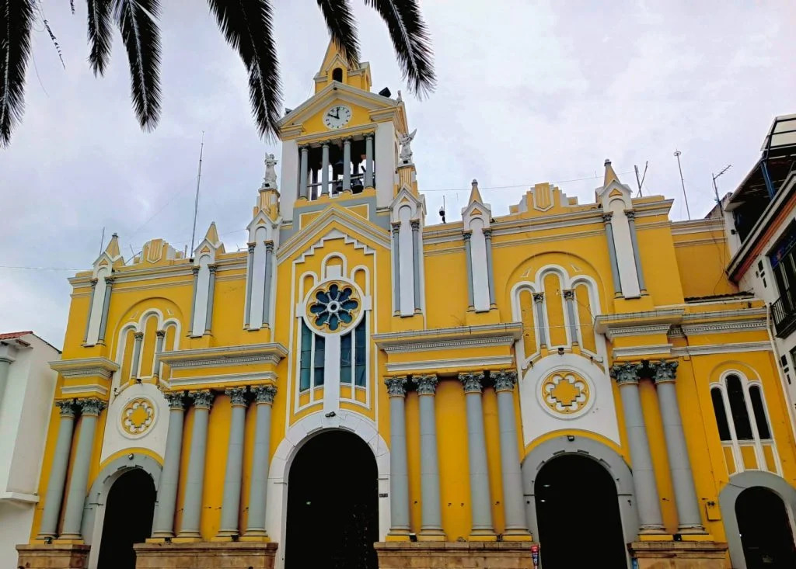
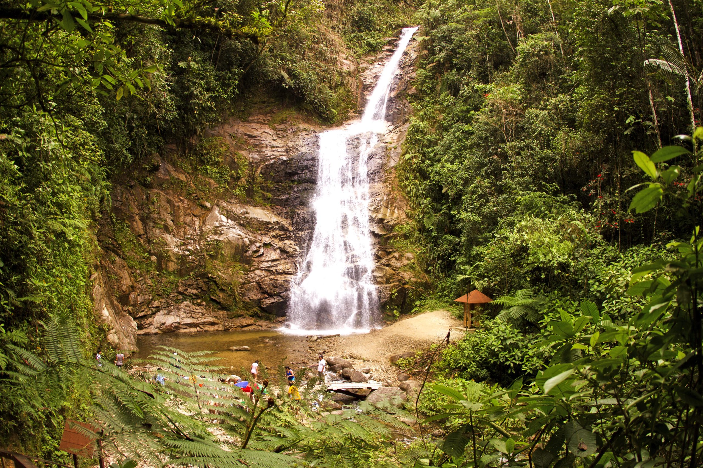

Catedral
Testigo histórico de la ciudad con una arquitectura hermosa y un valor patrimonial significativo.
- Ubicación: centro de Loja
- Actividad: recorridos históricos y culturales
Destinos turísticos

Testigo histórico de la ciudad con una arquitectura hermosa y un valor patrimonial significativo.

Un paraíso natural con bosques andinos, cascadas y gran diversidad biológica.

Un espacio emblemático para caminar, disfrutar y sentir la esencia de la ciudad.

Monumento icónico que representa la identidad y la historia de Loja.

Un lugar ideal para recreación, paisajes y un respiro entre la naturaleza y la ciudad.

Un destino cultural pensado para conocer la riqueza artística y musical local.